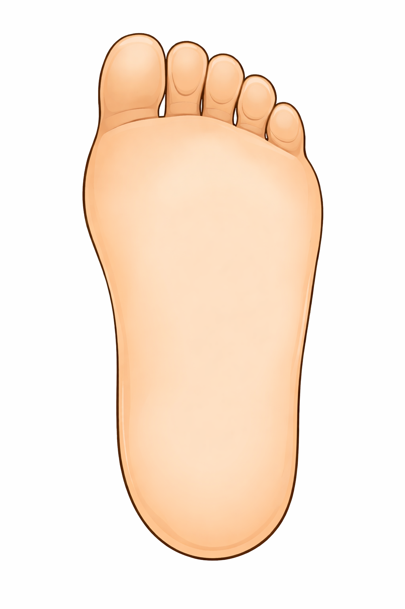

Pronto para monitoramento
Conecte a palmilha via Bluetooth (BLE) acima para iniciar a leitura dos sensores em tempo real.
Ensaio de Autonomia da Bateria
Gravação contínua no celular até a descarga completa do ESP32
Distribuição Plantar
Pé Direito · Zonas de maior vulnerabilidade neuropática

0 ADC
0 ADC
0 ADC
Pressão por Região Plantar
Sinal relativo captado pelos sensores de força FSR
Esclarecimento Acadêmico: As leituras de carga acima representam valores analógicos brutos (ADC de 12 bits, escala de 0 a 4095). A correlação exata com pressão física em kPa/N/cm² será estabelecida através do ensaio de equiparação em bancada com baropodômetro computadorizado.
Microclima Interno do Calçado
Monitoramento contínuo para evitar hipertermia (inflamação) e maceração da pele
Aguardando dados...
Aguardando dados...
Orientações de Autocuidado para o Paciente
Ações imediatas recomendadas com base nas informações capturadas pela palmilha